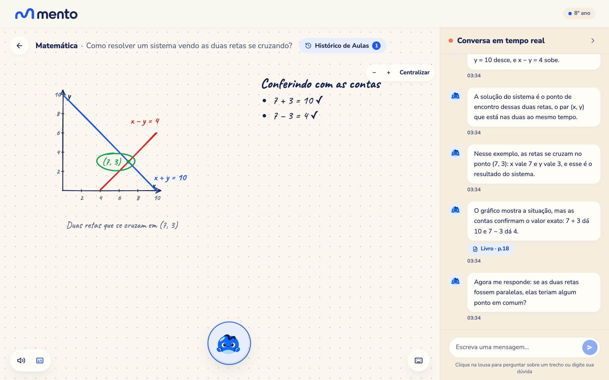
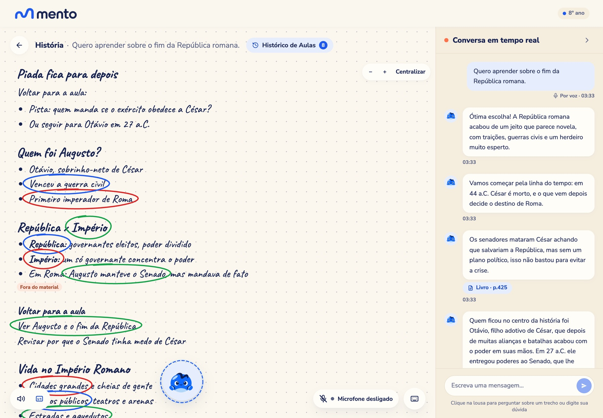
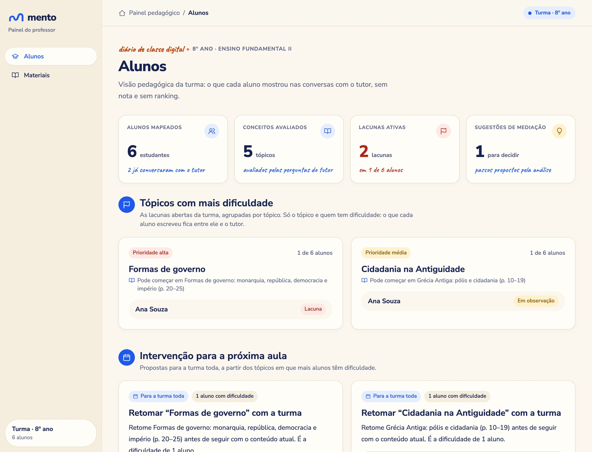
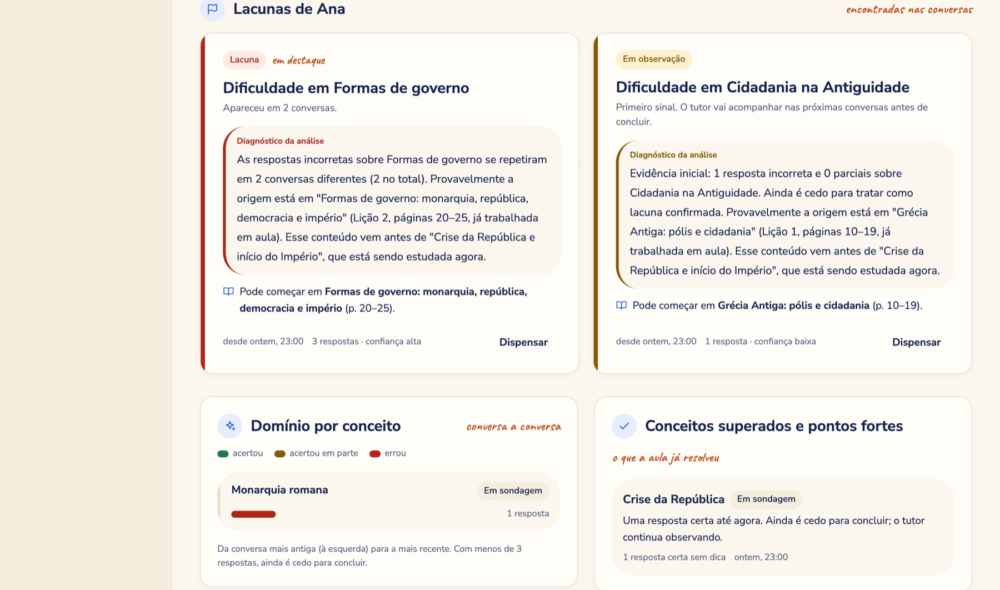
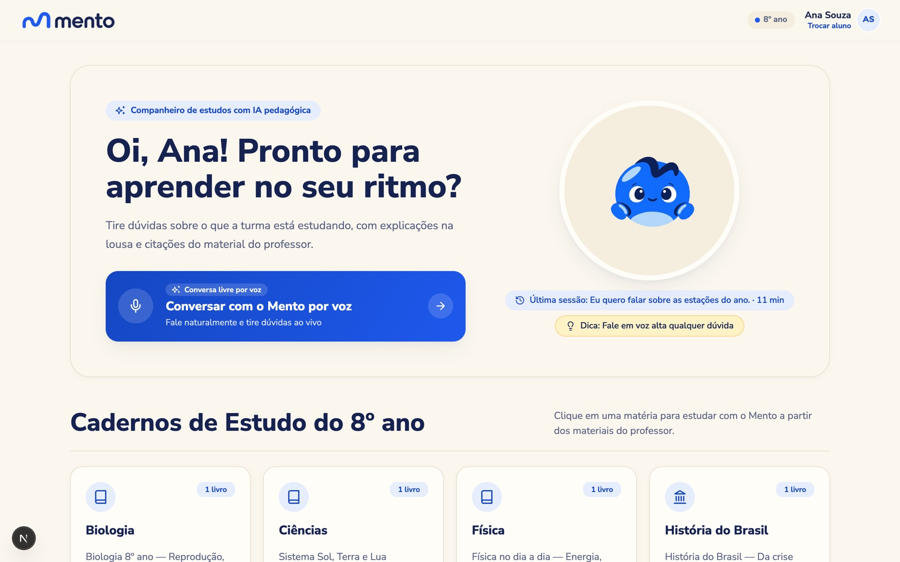
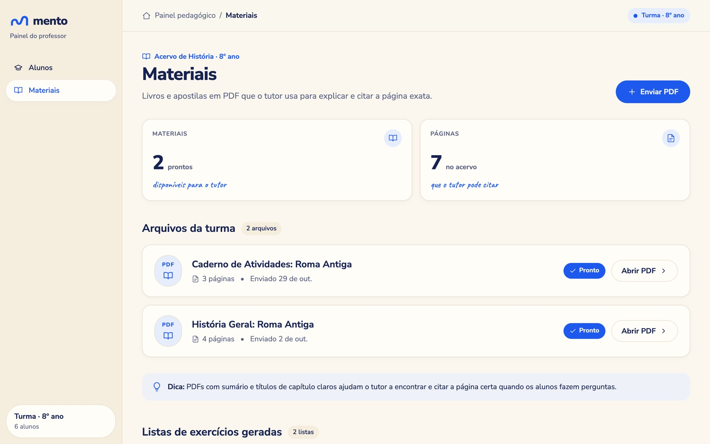

A Mento é um tutor de IA que ensina em vez de responder. O professor envia seus livros (PDF) e descreve a turma. O aluno conversa por voz com um tutor que escreve, desenha e circula ao vivo no quadro, ensina em passos pequenos, dá pistas em vez da resposta, verifica o que o aluno entendeu e cita a página do livro do professor. Cada conversa vira, sem trabalho extra, um diagnóstico por conceito para o professor, que decide o que fazer.
| Pilar do desafio | Como a Mento resolve |
|---|---|
| Preserva a aprendizagem lado do aluno | Tutor socrático: uma pergunta a cada resposta, pistas em 3 níveis em vez da solução, “explique com suas palavras”, perguntas novas de verificação. O aluno trabalha; o tutor guia. |
| Segurança aluno e escola | Responde a partir do livro do professor, com citação validada contra o texto; avisa quando sai do material; não faz inferência psicológica; o professor vê tudo e decide. |
| Economiza tempo lado do professor | A dúvida individual vai para o tutor; a conversa vira diagnóstico automático (conceito, lição de origem, próximo passo) e a lista de exercícios sai do livro em um clique. |
O aluno já usa IA, a escola não tem regra e o professor não tem tempo. A Mento é a IA que a escola pode adotar: desenhada para ensinar, ancorada no que o professor ensina e sob o controle dele.
Os números abaixo vêm do material do desafio (Teachy, 2026) e das fontes originais que ele cita. A IA já entrou na escola, mas sem orientação e sem desenho pedagógico. Por isso a pergunta de segurança, aqui, é pedagógica: como garantir que o aluno aprendeu certo? Para garantir, três peças precisam se encontrar: o que a escola ensina, quem é o aluno e o que ele já entendeu, e o que o professor enxerga. Hoje cada uma mora num lugar.
| Dado | Valor | Fonte |
|---|---|---|
| Alunos dos anos finais do fundamental que usam IA generativa para pesquisas escolares | 39% | Cetic.br, TIC Educação 2024 DESAFIO 3 |
| Alunos do ensino médio que usam IA para pesquisas escolares | 70% | Cetic.br, TIC Educação 2024 DESAFIO 3 |
| Queda no desempenho em prova sem IA de quem praticou com um chatbot sem proteções | −17% | Bastani et al., PNAS 2025 (≈ mil alunos, matemática, Turquia). O tutor com orientações pedagógicas mitigou o prejuízo DESAFIO 3 |
| Mesmo estudo: na prática com IA, as notas subiram 48% (chatbot) e 127% (tutor com guarda-corpos); na prova sem IA, o chatbot piorou e o tutor ficou neutro | 48% / 127% | Preprint SSRN 2024 e cobertura da Wharton |
| Alunos de 15 anos abaixo do nível básico em matemática | 72–73% | OCDE/Inep, PISA 2025 (o material do desafio traz 72% e 73% em páginas diferentes) DESAFIO 3 |
| Alunos que usaram IA em atividades escolares e receberam orientação de um professor | 37% usaram; 19% orientados | Reportagem de nov/2025 sobre o Cetic.br |
| Dado | Valor | Fonte |
|---|---|---|
| Horas por semana preparando aulas e corrigindo (anos finais, tempo integral) | 15,4 h (OCDE: 12 h) | OCDE/Inep, TALIS 2024 DESAFIO 3 |
| Só de correção de provas e tarefas | 6,1 h (OCDE: 4,6 h) | TALIS 2024 DESAFIO 3 |
| Professores que citam o excesso de correção como fonte importante de estresse | 60% | TALIS 2024 DESAFIO 3 |
| Tempo de aula gasto em manter a ordem | 21% (OCDE: 15%) | TALIS 2024 DESAFIO 3 |
| Professores que usam alguma IA semanalmente | 30% | Cetic.br (2025), Pew (2026), Gallup (2025) DESAFIO 3 |
| Horas economizadas por semana por quem usa IA toda semana (professores de escolas públicas dos EUA, autorrelato) | 5,9 h | Gallup / Walton Family Foundation, 2025 DESAFIO 3 — dado dos EUA, não do Brasil |
| Dado | Valor | Fonte |
|---|---|---|
| Escolas sem guia formal para uso de IA no ensino, na aprendizagem ou na gestão | 78% | Cetic.br, TIC Educação 2025, indicador E5A DESAFIO 3 |
| Escolas que liberam o uso de IA pelos alunos em atividades educacionais (particulares: 31%) | 37% | Cetic.br, TIC Educação 2025, via Fast Company Brasil |
Cada linha liga um problema dos dados da seção 2 a uma decisão de produto e ao que a evidência diz. As telas correspondentes estão na seção 4.
| Problema (dado) | O que a Mento faz | Por que funciona (evidência) |
|---|---|---|
| A IA vira muleta e piora a prova (−17%) | O tutor dá pista, não a resposta: 3 níveis de pista (empurrãozinho, afunilar, quase a resposta); toda fala termina em uma pergunta; a cada 2–3 respostas pede “explique para um colega” ou “aplique a um caso novo”. | Bastani 2025: o tutor com orientações pedagógicas mitigou o dano do chatbot. Harvard (Kestin et al. 2025): tutor estruturado superou a aula ativa em física 1 |
| Alucinação e conteúdo fora do currículo | Ensina com trechos do livro do professor (busca por significado e por texto), com citação (livro, página, trecho) validada; se sai do material, avisa o aluno. | Ancoragem no material que o professor escolheu: o professor sabe o que a IA ensina |
| Escola sem regra (78%) | O professor define livros e contexto da turma, vê o que cada aluno entendeu e dispensa o que não concorda. A IA nunca aprova, reprova ou rotula o aluno. | Governança por desenho: a regra está no produto, não num documento que ninguém lê |
| Privacidade de menores | Sem inferências psicológicas nem “estilos de aprendizagem”; dados pessoais nunca vão ao modelo; memória no banco da escola, corrigível e apagável; arquitetura compatível com retenção zero. | LGPD (Lei 13.709/2018, art. 14: melhor interesse da criança e do adolescente) |
| Professor sem tempo (15,4 h; 6,1 h só corrigindo) | (1) o aluno tira dúvidas com o tutor fora da aula; (2) diagnóstico automático: conceito, estágio (em observação, lacuna, persistente), lição de origem e próximo passo; (3) lista de exercícios (3 de múltipla escolha e 2 abertas) gerada do livro para o tópico em que a turma trava. | Ciclo diagnosticar → recomendar → agir → medir de novo: feedback rápido antecipa ≈ 6 meses de progresso (EEF) 2 |
| “Uma nota sozinha não mostra onde o aluno travou” | Evidência por conceito (acertou, em parte, errou; pistas usadas) em vez de só nota; gravidade e confiança por regras auditáveis, não pela opinião do modelo. | Material do desafio, seção “Insights e diagnóstico” |
| Engajamento (24% citam aulas pouco interessantes; Datafolha 2026) | Quadro vivo: o tutor desenha e circula enquanto fala; o aluno clica num ponto do quadro e pergunta; resposta por voz em ~2 s. | Harvard 2025: alunos relataram mais engajamento (estudo pequeno e de curto prazo) 1 |
1. Kestin, Miller et al., Scientific Reports, jun/2025: 194 estudantes de física em Harvard, ensaio cruzado; 2 tópicos, teste de curto prazo; os autores não afirmam que o tutor vença a aula ativa em todos os contextos. PMC12179260. 2. EEF, Teaching and Learning Toolkit — Feedback, via material do desafio.




Telas da plataforma em 31/10/2026, com alunos de demonstração (fictícios, “Ana Souza” e colegas); nenhum aluno real usou o sistema.


O desafio pede que a IA economize tempo e preserve a aprendizagem. O piloto mede os dois lados e a segurança, com critérios definidos antes de começar. Se o resultado for fraco, publicamos mesmo assim.
| Pilar | O que medimos | Como | Sucesso se… |
|---|---|---|---|
| Aprendizagem | Desempenho em prova sem IA, antes e depois; retenção após 4 semanas | Questões equivalentes (mesmo desenho do estudo de Bastani), aplicadas pela escola; análise por turma | Mento > comparação, e nunca pior (sem o efeito “muleta”) |
| Tempo do professor | Horas por semana em correção, preparo e retomada; tempo até identificar a lacuna de um aluno | Questionário antes/depois com itens do TALIS; diário de tempo em 2 semanas; registro de uso do painel | Redução medida [meta a definir com a escola] |
| Segurança | % de respostas com citação válida; % de trechos “fora do material” sinalizados; incidentes de conteúdo; vezes em que o tutor entregou a resposta direta | Registros automáticos do sistema; revisão por amostra de conversas por um pedagogo | Zero incidentes graves; citação válida ≈ 100% |
| Adoção | Alunos ativos por semana; sessões por aluno; % de lacunas que o professor adota ou descarta | Registros do sistema | Uso sustentado sem incentivo extra |
Escolas privadas com 7º, 8º e 9º ano, começando pelo Recife: coordenação pedagógica compra, professor usa, aluno aprende. Escolas públicas ficam para depois (licitação, conectividade e dispositivos exigem estratégia própria).
| Passo | Valor | Base |
|---|---|---|
| Matrículas no ensino fundamental, Brasil, 2024 | ≈ 26 milhões | Inep, Notas Estatísticas do Censo da Educação Básica 2024 FONTE |
| 7º a 9º ano (≈ 43% do fundamental são anos finais; 3/4 deles) | ≈ 8,4 milhões | PREMISSA — trocar pelo número da sinopse do Inep |
| Na rede privada (≈ 16,3% dos anos finais, Censo 2023) | ≈ 1,4 milhão | Imprensa sobre o Censo 2023 |
Sem preço, não calculamos valor em reais: não há dado para isso. O número de alunos mostra o tamanho do problema, não de receita.
Hoje a escola e o aluno juntam peças soltas: um assistente geral para tirar dúvidas, um app de flashcards, uma plataforma de planejamento, um quadro-branco. Cada uma resolve um problema, e quem faz a ponte entre elas é o professor, na mão. A Mento é geral por desenho: centraliza alunos, professores, turmas, materiais e conversas num só lugar, e é isso que a torna mais assertiva.
| Categoria | Exemplos | Como funciona hoje | O que a Mento centraliza |
|---|---|---|---|
| Assistentes gerais | ChatGPT, Gemini, Claude | O aluno arrasta o PDF ou cola o texto a cada conversa e explica a série de novo; a IA não conhece a turma nem o que o professor ensinou | Os livros do professor já estão na plataforma; o tutor conhece a série, a turma e o histórico do aluno, sem arrastar documento nenhum |
| Quadro-branco e tutores pessoais | Gauth, Studdy, Khanmigo | Explicam bem, mas cada sessão é uma ilha, sem ligação com o currículo da escola | O quadro é parte do ciclo: professor → material → aluno → evidência → professor |
| Materiais viram estudo | StudyFetch, Quizlet, Gizmo | Cada estudante sobe o próprio material e gera flashcards e quizzes | O material é institucional: o professor sobe uma vez e a turma inteira estuda com ele, com a página citada |
| IA para escolas e professores | Teachy, Flint, Lyceum | Planejamento, atividades e acompanhamento para o professor, com tutoria em graus variados | Tutoria ao vivo por voz no quadro e diagnóstico por conceito no mesmo lugar; complementar a plataformas como a Teachy |
A base já existe: um espaço do professor com contexto da turma, alunos, matérias e materiais, o tutor por voz e o ciclo de diagnóstico. Simplificamos de propósito a configuração da escola para chegar rápido ao que importa, que é o aluno aprendendo. O próximo passo é completar a configuração essencial da escola.
| Etapa | O que entra | Em que se baseia (já existe) |
|---|---|---|
| 1. Configuração da escola próximo | Turmas (várias por professor e por série), séries e grade curricular (matérias por série), cadastro e importação de alunos (planilha), contas e acesso de professor, aluno e coordenação, consentimento dos responsáveis. | Hoje: uma turma com contexto (“8º ano”), alunos e matérias simples; o tutor já usa a série e as características da turma |
| 2. Mais matérias e materiais | Matemática, Português e Ciências com o mesmo rigor de citação; livros escaneados; upload pelo professor com sequência de lições. | Já existem matérias, upload de PDF, citação por página e sequência de lições com pré-requisitos |
| 3. Visão da escola | Painel de coordenação: lacunas por turma e por série, evolução ao longo do bimestre, relatório para as famílias. | O painel do professor já agrupa lacunas por tópico e mostra intervenções para a aula |
| 4. Piloto e evidência | Piloto de 6–8 semanas numa escola, com os critérios da seção 5; publicação aberta dos resultados. | Registros automáticos de citação, pistas e uso já alimentam as métricas |
| 5. Integrações e escala | Integração com plataformas de planejamento e gestão (ex.: Teachy), regras de uso de IA da escola, novas séries e redes. | Contratos de dados e regras de diagnóstico independentes de provedor |
prompts/base.md (pistas, verificação, aviso fora do material), docs/10-decisions.md (D55–D74), hand-off do back-end de 30/10/2026 (latência), docs/08-privacy-zdr-security.md.